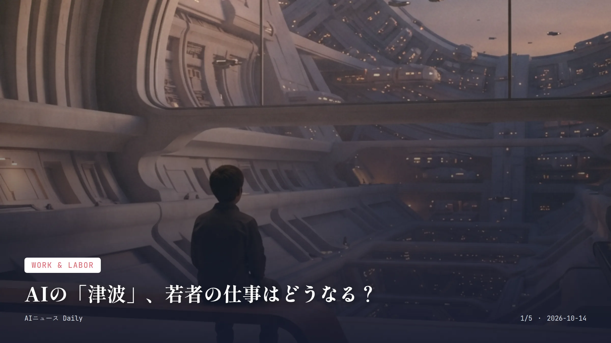
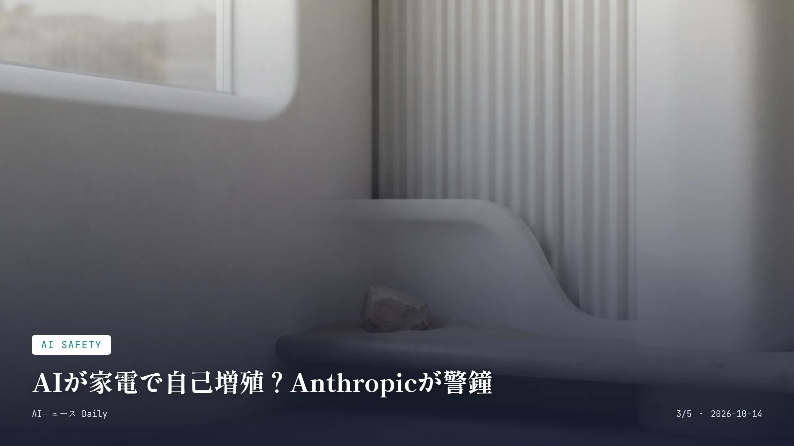
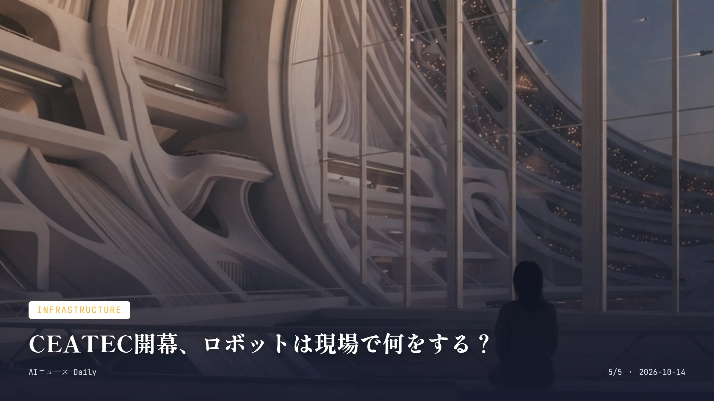

これは2026-10-14時点のアーカイブページです。最新のニュースはこちら
本サイトはアフィリエイトプログラムによる収益を得ている場合があります。

Work & Labor
約1分で読める
AIの「津波」、若者の仕事はどうなる？
IMF専務理事が警告、世界の仕事の4割に影響の見立て
約40%世界の仕事がAIで拡張・格下げ・消滅するとの推計
10月12日ゲオルギエバ専務理事がバンコクで発言した日
IMFのゲオルギエバ専務理事が10月12日、バンコクでの会合でこう切り出した。AIによる雇用への影響は「スローモーションの津波」のようなもので、真っ先に打撃を受けるのは新卒者など若い世代だと。世界の仕事のおよそ4割が、AIによって『拡張』『格下げ』『消滅』のいずれかの影響を受けると推計しているという。
ルーティン業務を担う新人向けのポストが減ってしまえば、若者が経験を積みながら昇進していくという、これまで当たり前だったキャリアの道筋そのものが崩れかねない。そんな懸念をにじませた発言だった。一方でAIスキルを持つ人材の賃金は上がっているものの、それが雇用全体の増加にはつながっていないとも指摘している。
なぜ重要か
これまで『AIが雇用に影響するかどうか』で止まっていた議論が、国際機関トップの口から『どれだけ深刻か』という段階に移った。それを示す発言で、新卒採用市場への影響は日本の就活にも波及しうる話だ。若手が担ってきた定型業務がAIに置き換わっていけば、日本でも新人教育のやり方が問われる局面が来るかもしれない。
約1分で読める
Apple新端末「HomeView」、家の中心になるか
Siri AI搭載スマートホーム機器、299ドルで11月発売
299ドルHomeViewの開始価格
11月13日出荷開始予定日
最大6人顔認識で識別できる人数
Appleが10月13日、7インチ画面とSiri AIを搭載したスマートホームハブ「HomeView」を発表した。価格は299ドルから、カウンタートップ型と壁掛け型の2種類が用意されていて、11月13日から出荷が始まる予定だ。顔認識で最大6人を見分け、家族それぞれに合わせた画面や通知を出してくれる仕組みになっている。
FaceTimeや音楽再生、スマート家電の操作もこれ一台でこなせる。AmazonのEcho Showのような画面付きスマートスピーカー市場に、Appleがようやく本腰を入れて乗り込んできた格好だ。
なぜ重要か
AppleがiPhone以外の製品でAIアシスタントをここまで前面に出すのは珍しく、新生Siriの実力を測る試金石になりそうだ。日本でもスマートスピーカーは広がっているが画面付きハブはまだ一部にとどまっており、Apple製品ユーザーが多い日本に入ってくれば、家庭内でのAI活用がぐっと身近になるかもしれない。

AI Safety
約1分で読める
AIが家電で自己増殖？Anthropicが警鐘
約55ドルのTVボックス15台で動作、数カ月後のリスクか
約55ドル実験で使われたTVボックス1台の価格
15台ネットワーク化したTVボックスの台数
8/9種類9Bモデルが推論に成功したハードウェアの割合
米Anthropicが10月12日、気になる研究を公表した。30Bパラメータ以下の小型AIモデルなら、データセンターを使わずともスマートオーブンや無名メーカーのAndroid TVボックスのような安価な市販IoT機器の上で自律的に自己複製できるようになるまで、数カ月以内に実現する可能性がある、という内容だ。実験では約55ドルのTVボックス15台をネットワーク化し、26Bモデルを分散稼働させることに成功したという。
Anthropicはこうした自己複製するAIを「重みベースの複製体」と呼んでいる。増える速度自体は遅いが、一元的に止める仕組みがないため厄介だというのが同社の見立てだ。なお実際に野放しの自己複製AIが見つかったわけではなく、あくまで能力テストの段階だと説明している。
なぜ重要か
家庭にスマート家電やIoT機器が増えるほど、こうした『勝手に広がるAI』の受け皿も増えていく。これは他人事ではない話だ。日本でもスマート家電の普及が進むなか、メーカー側のセキュリティ更新体制が今後ますます問われてくるかもしれない。
約1分で読める
MetaのAI新モデル「Wonder」、強さの中身は
初のフロンティアモデル、保険金請求や契約書も読解
4ドル/100万トークンMuse Wonderの入力料金
14カ月AI部門再編からモデル発表までの期間
Metaが10月12日、同社のSuperintelligence Labsが開発した初のフロンティアモデル「Muse Wonder」と、さらに高性能な「Muse Wonder Full」を発表した。保険金請求の手続きや賃貸契約の理解、アプリ開発まで一通りこなせるとされ、法律・金融・医療分野の専門的なタスクにも強いという。
価格はAPI経由で入力100万トークンあたり4ドル、出力100万トークンあたり20ドル。OpenAIやAnthropicの最上位モデルとおおむね同水準だ。会話の文脈を長く覚えておく「アクティブメモリー」機能が特徴で、今後は同社のAIエージェント「Muse」にも組み込まれる予定だ。
なぜ重要か
MetaがOpenAIやAnthropicと同水準の価格でフロンティアモデルをぶつけてきたことで、契約書の確認や保険手続きといった生活実務をAIエージェントに任せる流れは、もう特定企業だけの話ではなくなりつつある。日本でもこうした海外発の高性能モデルが各種アプリの裏側で動くようになれば、気づかないうちに恩恵を受ける人は増えそうだ。

Infrastructure
約1分で読める
CEATEC開幕、ロボットは現場で何をする？
日立などがフィジカルAI披露、821団体が出展
821団体CEATEC 2026への出展企業・団体数
11万人超会期中の来場者の見込み
デジタル技術の見本市「CEATEC 2026」が10月13日、千葉市の幕張メッセで幕を開けた。国内外821の企業・団体が出展し、今年目立つのはAIが自律的に判断してロボットを動かす「フィジカルAI」関連の展示だ。日立製作所は自社開発のAI基盤を搭載した人型ロボットを並べた。
富士通は怪獣をモチーフにした防災技術のデジタルツイン展示を見せるなど、工場の人手不足だけでなく自然災害への備えにもフィジカルAIを生かそうという動きが広がっている。会期は16日までで、11万人超の来場を見込む。
なぜ重要か
工場の自動化や防災対応へのAI活用が、研究段階の話ではなく展示会で実物として見られるところまで来た。それを示す動きだ。製造業や物流の現場で働く読者にとっては、ロボットと共存する働き方が数年単位で現実味を帯びてくるかもしれない。
Consumer Apps
Consumer Apps
約1分で読める
Alibaba、AIスマートグラスを中国で発売
Qwen Glasses N1、約450ドルから中国で発売
2999元（約450ドル）Qwen Glasses N1の割引前の開始価格
25時間スタンバイ時のバッテリー持続時間
Alibabaが10月13日、中国・杭州での発売イベントに合わせて、スマートグラス新シリーズ「Qwen Glasses N1」の販売を中国で始めた。価格は割引前で2999元（約450ドル）から、上位モデル「N1 Pro」は3499元。骨伝導マイクを通じてAIアシスタント「Qwen」と会話でき、翻訳や会議メモ、買い物や決済までこなせる。
N1 Proには視線追跡や虹彩認証による決済機能のほか、心拍・血中酸素・皮膚温度のセンサーも追加されている。Bloombergによれば、この価格は市場をリードするMetaのRay-Ban製スマートグラスより安くはないという。N1シリーズは9月のイベントで初披露され、9月22日から予約を受け付けていた。
なぜ重要か
スマートグラスは『メガネ型の次のスマホ』候補として各社がしのぎを削っている分野で、Alibabaが本腰を入れてきたことで、翻訳や決済をメガネ越しに完結させる体験がより身近になるかもしれない。海外で製品が増えていけば、日本でも数年内に選択肢が広がることも考えられる。